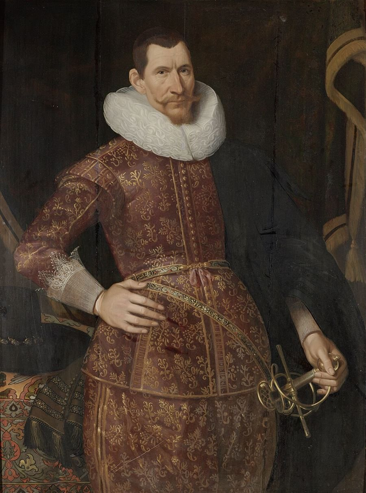
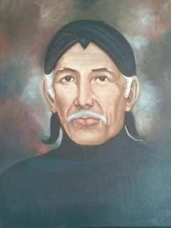
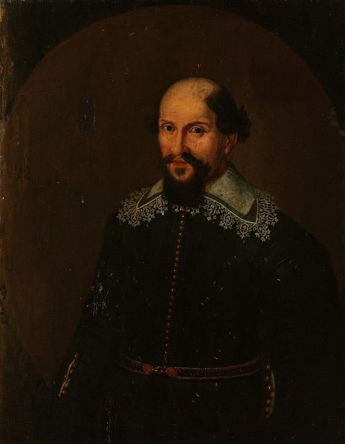
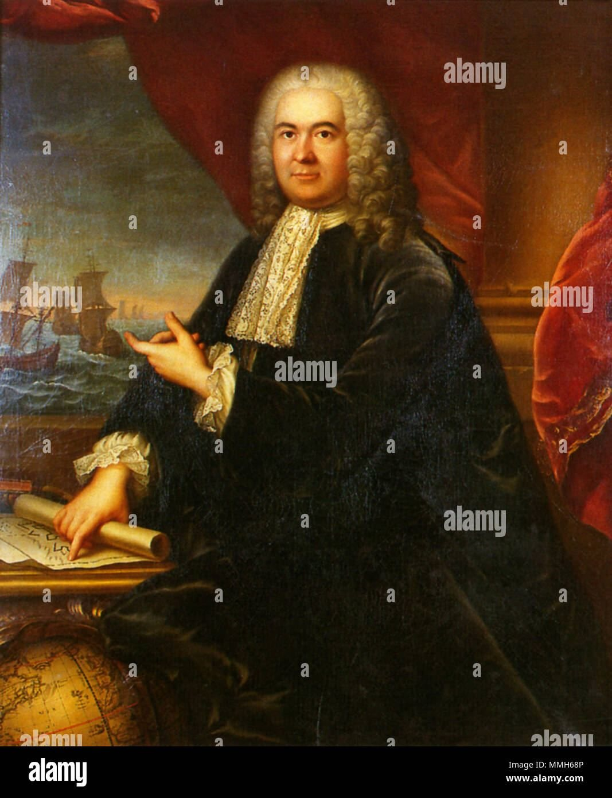
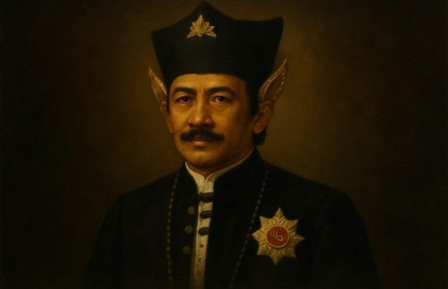

Dua Kekuatan Berhadapan: Mataram dan VOC
Perbenturan antara raksasa agraris pedalaman Jawa dengan kongsi dagang maritim global di muara Ciliwung (1619–1627). Sebuah perseteruan geopolitik yang merefleksikan benturan dua filsafat kekuasaan monarki daratan melawan imperium dagang bercorak korporasi modern awal.
Agraris Kedaton vs. Maritim Korporasi
Perbandingan anatomi logistik, falsafah perang, dan struktur komando yang menentukan jalannya perseteruan di pesisir barat Pulau Jawa.
Sri Sultan Agung Hanyakrakusuma
"Kraton Karta — Mandataris Penyatuan Seluruh Bhumi Nusantara di Bawah Kalpataru Islam Mataram."
Agraris feodal terpusat: jutaan hektar lumbung padi pedalaman Jawa Tengah, ratusan ribu prajurit infantri darat, pasukan kaveleri berkuda, dan konvoi logistik darat-pesisir.
Kedaulatan mutlak atas pulau Jawa. Tiada penguasa asing berhak mendirikan benteng permanen atau mengendalikan pelabuhan tanpa izin resmi Kraton Mataram.
Pusat Kraton Karta (Bantul/Kotagede). Pesisir logistik: Kendal, Jepara, Tegal, Cirebon dengan ratusan perahu jung pengangkut logistik.
Jan Pieterszoon Coen
"Kasteel Batavia — Tiada perniagaan tanpa senjata perang; tiada perang dapat bertahan tanpa perniagaan rempah."
Maritim global kapitalistik: kapal layar galeon bersenjata meriam berat, serdadu bayaran Eropa (Jerman, Skotlandia), milisi Mardijker, dan jaringan kredit Amsterdam.
Monopoli perdagangan rempah Kepulauan Maluku, kendali lintas Selat Sunda, dan pengamanan pasokan beras pesisir utara tanpa tunduk kepada kekuasaan raja pribumi.
Benteng Kasteel Batavia berparit ganda di muara Kali Ciliwung. Dukungan armada laut kapal perang pimpinan laksamana laut VOC di Teluk Batavia.
Tokoh Kunci Di Balik Mandat Perang

Sultan Agung Hanyokrokusumo
Raja ketiga Kesultanan Mataram yang memerintah (1613–1645). Dikenal atas visinya mempersatukan seluruh pulau Jawa di bawah naungan kedaulatan Islam Mataram serta penggagas penanggalan Kalender Jawa.

Jan Pieterszoon Coen
Gubernur Jenderal VOC yang membumihanguskan Jayakarta pada 1619 lalu mendirikan Kasteel Batavia. Dijuluki "De IJzeren Jan" (Jan Besi) karena karakternya yang dingin, kejam, dan berprinsip hegemoni mutlak.

Tumenggung Bahureksa
Panglima tertinggi angkatan laut Mataram ekspedisi 1628. Menahkodai 59 perahu jung sarat perlengkapan tempur dari muara Kali Bodri Kendal menuju Teluk Batavia. Gugur syahid dalam serbuan Benteng Hollandia.

Jacques Specx
Pejabat senior perintis hubungan dagang Belanda-Jepang (Hirado) yang tiba tepat saat Coen wafat secara mendadak. Mengambil alih kepemimpinan darurat Batavia dan mengkonsolidasikan pertahanan benteng pasca-pengepungan.
Dipati Ukur dan Mandurareja
Pangeran Mandurareja (cucu Ki Juru Martani) beserta Wangsanata (Dipati Ukur) memimpin infanteri darat dari Priangan dan pedalaman. Membuka koridor rute selatan lewat hutan lebat Karawang dan Cisadane.

Jacques le Febvre
Komandan benteng luar dan koordinator barikade redoute. Memainkan peran kunci menahan gempuran infantri Mataram di sektor selatan benteng Kasteel Batavia selama bulan-bulan kritis September 1628.

Kiai Adipati Juminah
Paman dari Sultan Agung yang ditunjuk sebagai panglima perang tertinggi pada ekspedisi kedua (1629). Bertanggung jawab atas koordinasi 14.000 pasukan elit beserta pengawalan jalur rantai pasokan logistik lumbung Karawang-Cirebon.
Jalan Menuju Perang: Muara Ciliwung 1619–1627
Rangkaian insiden diplomatik dan sengketa maritim yang memupuskan harapan persekutuan damai antara Mataram dan VOC.
Kejatuhan Jayakarta dan Berdirinya Batavia
Jan Pieterszoon Coen menyerbu Jayakarta, membakar keraton Pangeran Wijayakrama, dan secara sepihak memproklamasikan Kasteel Batavia. Sultan Agung memandang pendirian benteng batu Eropa di tanah Jawa sebagai pelecehan langsung terhadap hak kedaulatan Mataram.
"Sira Walanda wus tanpa duga, yasa loji ing tanah pasisir tanpa sungkem marang Sang Nata..." (Orang Belanda bertindak lancang membangun benteng di pesisir tanpa tunduk menghadap Sang Raja).
Sengketa Monopoli Beras dan Insiden Jepara
VOC menuntut hak monopoli penuh atas pembelian beras di pelabuhan Jepara dan Tegal untuk memasok pos-pos Maluku. Sultan Agung menolak keras monopoli dan mengembargo pasokan pangan ke Batavia sebagai bentuk peringatan ekonomi pertama.
Harga beras di Kasteel Batavia melambung 400%. Coen terpaksa mendatangkan gandum dan beras dari Siam dan Coromandel (India) dengan biaya perkapalan luar biasa mahal.
Penaklukan Madura dan Surabaya
Mataram berhasil menundukkan Surabaya dan Madura, menyatukan seluruh Jawa bagian tengah dan timur. Pasukan Mataram kini sepenuhnya terfokus mengarahkan seluruh daya perang ke arah barat (Jayakarta/Batavia).
"Kaisar Mataram kini telah menyelesaikan urusan di Timur. Tiada keraguan lagi bahwa matanya kini mengarah langsung ke benteng kita di sini..."
Kembalinya Coen dan Titah Mobilisasi Akbar
Jan Pieterszoon Coen kembali dari Belanda untuk masa jabatan kedua dengan perintah tegas: pertahankan Batavia bagaimanapun caranya. Di Karta, Sultan Agung mengumpulkan para adipati pesisir dan memandatkan penyiapan armada kapal perang di Kendal.
Bahureksa diperintahkan mempersiapkan penebangan kayu jati di Kendal untuk perakitan perahu perang. Babak konfrontasi terbuka tinggal menghitung bulan.
"Pangeran Batavia ora kena ora kudu sumungkem marang ratuning Jawa. Lamun ora gelem pasrah, bakal tinumpes dening bala Mataram kongsi lebur tanpa sisa."
Pernyataan tegas ini mencerminkan pandangan Mataram bahwa kehadiran kongsi dagang Belanda di tanah Jawa bukan sekadar urusan niaga, melainkan ancaman langsung terhadap martabat dan tatanan kosmik kekuasaan Jawa yang berpusat di Karta.
Bab 02: Dua Pengepungan Akbar (1628 dan 1629)
Pelajari serbuan armada laut Bahureksa, perang parit di bantaran Ciliwung, serta tragedi pembakaran lumbung padi Karawang.